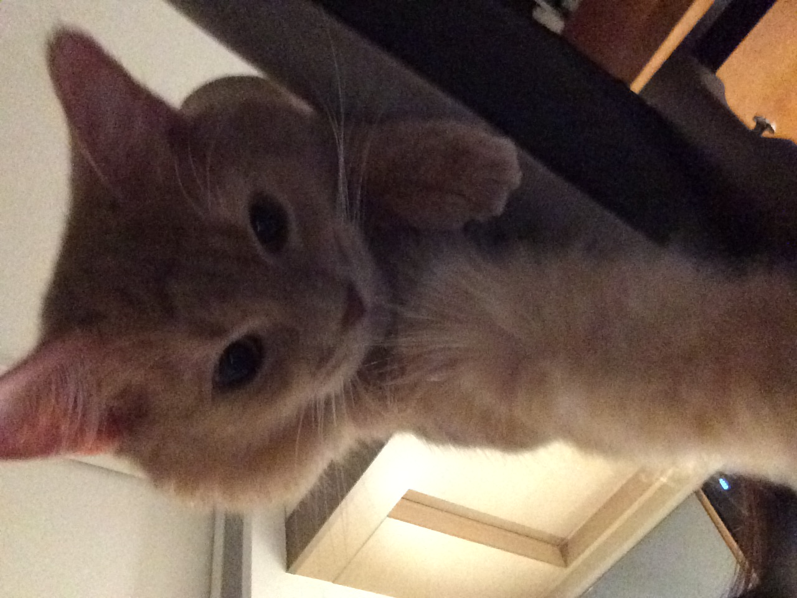

Psychology
Exploring behavioral patterns, cognitive processes, and interpersonal dynamics.
Psychology Student & Observer
Welcome to my corner of the web. I explore human behavior, creative stillness, and the art of paying attention.
“Empathy is not just a feeling; it is a rigorous practice of attention.”
A little about me
Hello! I am Kira, an undergraduate psychology student fascinated by the invisible architecture of thought, emotion, and everyday habits.
I believe that understanding people starts with noticing the small things—a shift in vocal tone, the pacing of a quiet room, or the routines that keep us grounded. For me, psychology isn't just an academic path; it's a way to cultivate genuine empathy.
When I'm not studying human behavior or reading, you can find me spending time with my cat Kiro, practicing mindful calligraphy, or enjoying quiet study moments.

“Quiet observation is often the loudest form of understanding.”
Mindful Study & ReflectionPassions & Focus
The core practices that nourish my mind and keep me balanced.
Exploring behavioral patterns, cognitive processes, and interpersonal dynamics.
Practising patient, expressive lettering as a form of active meditation.
Immersing myself in psychological literature, essays, and thoughtful prose.
Sharing daily life with Kiro, observing animal behavior, and finding comfort in small creatures.
Staying grounded through daily intentional habits, quiet spaces, and balance.
Academic & Creative work
A snapshot of explorations bridging theory, inquiry, and craft.
An exploratory literature review examining how text-based communication alters emotional resonance among peers.
Discuss research→A qualitative observational study documenting how environmental sound influences stress recovery in study lounges.
Ask about findings→A personal visual experiment combining psychological state descriptors with hand-rendered calligraphy forms.
Explore project→Let’s connect
Whether you want to discuss psychology, share a book recommendation, or say hi, my inbox is always open.